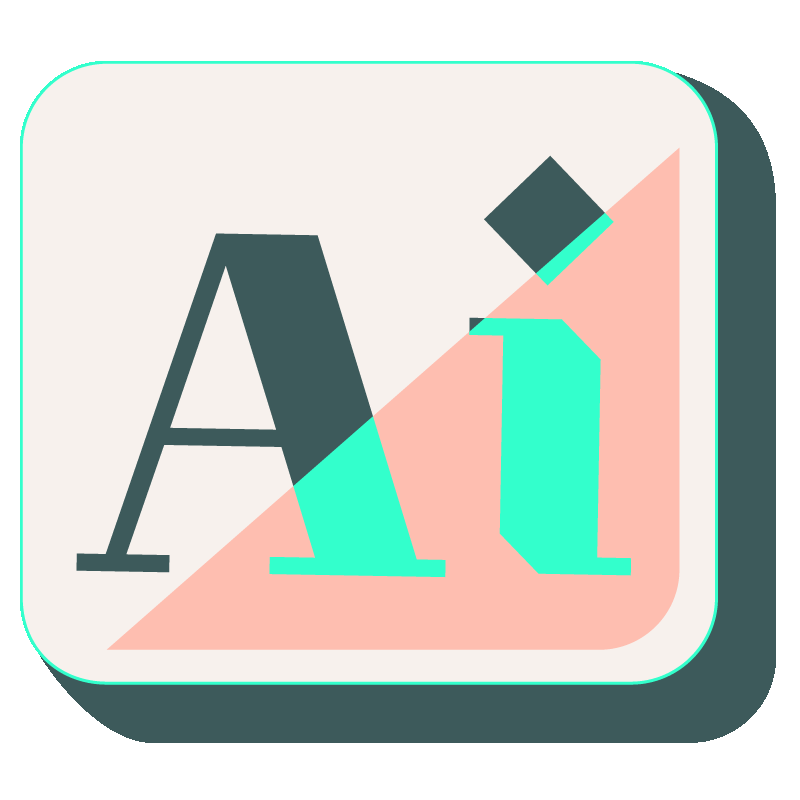
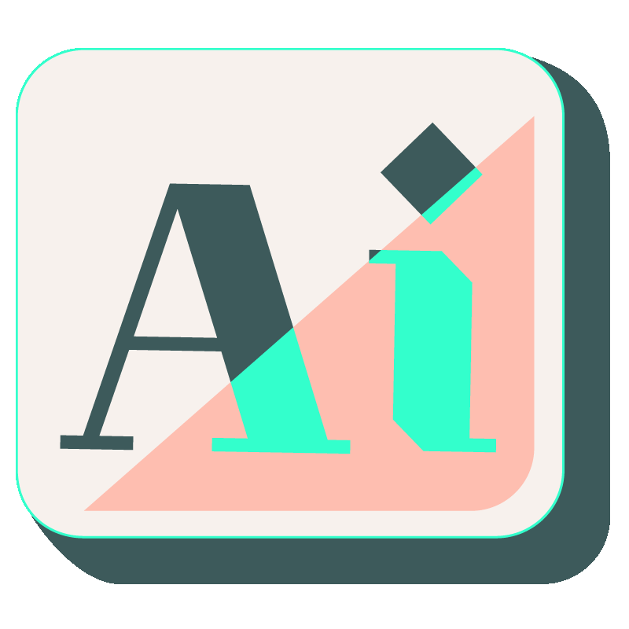

Je suis Designer Graphique, Illustratice freelance basée à Lyon
Après 14 années dans différents postes évolutifs dans la vente de textiles et accessoires,
j'ai
choisie
de retourner dans le monde de l'art et de la culture en créant ma propre entreprise
freelance
"Visual For All".
Mon intêret pour la transmition, la communication et le numérique, m'a poussée à faire une
reconversion professionnelle en tant que Developpeur Front-End, pour la réalisation de site
internet, de blog et d'application.
Mon Leitmotiv : combiner un visuel moderne, responsive et accessible pour TOUS.

Mes Loisirs
Sport (courses, escalades, natation, vélo)
Loisirs Créatifs (construction, restauration, rénovation)
Tea Time
Logiciels Graphique

 
